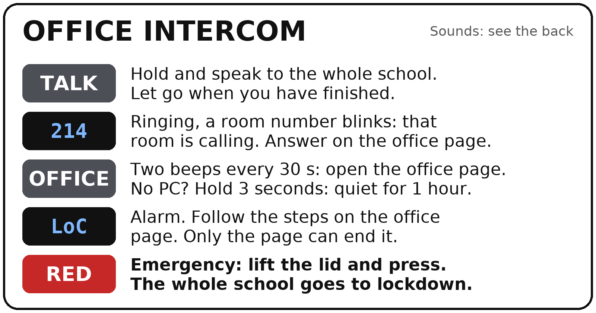
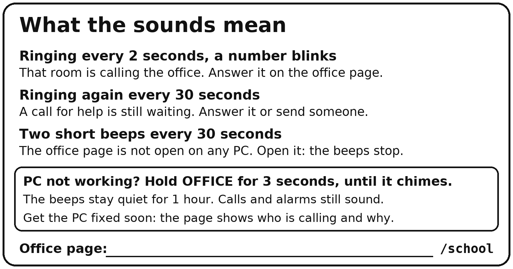

The card for an office unit. Print at 100 % (no "fit to page"). Each side is 80 x 42 mm. Cut both out and glue or laminate them back to back, up to 0.8 mm thick. Write the office page's address on the back first. The card slides into the holder on the front of the case from the top, like a room's card. The sheet for the wall is office_wall_card.html.

